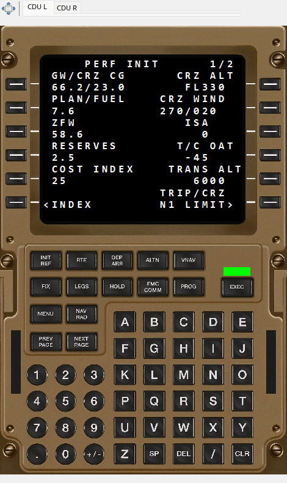

Ejemplo de interfaz con datos sintéticos de demostración; no es un vuelo real.
La vista muestra texto grabado de B777 CDU con colores, tamaños y avisos disponibles. Las pestañas eligen izquierda/derecha, con páginas independientes. Las teclas de fondo no programan FMS.
El tiempo selecciona la última pantalla conocida. Texto sin cambios puede ser correcto si solo se grabaron cambios. INIT/PERF/LEGS son historia, no una ruta de mapa calculada. Una unidad ausente no se sustituye por la otra. B777 y formato dependen del SDK. Las imágenes muestran ambas unidades por separado.
